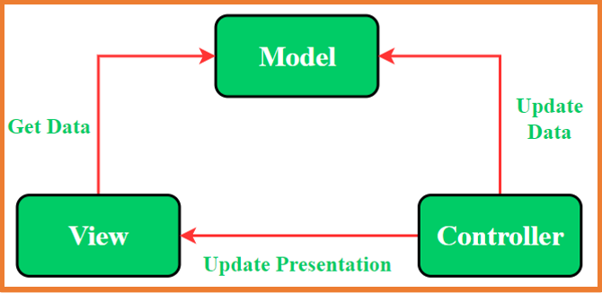

En Android el hilo principal de ejecución es el encargado de mostrar la interfaz de usuario
y de gestionar las interacciones del usuario con la aplicación.
Esto significa que si el hilo principal ejecuta una tarea pesada o asíncrona, la interfaz de usuario se quedará bloqueada
y el usuario no podrá interactuar con el dispositivo hasta que la tarea finalice.
Tareas pesadas: aquellas que tienen una duración larga.
Tareas asíncronas: aquellas que se podrían realizar en segundo plano
Corrutinas
Kotlin dispone de las corrutinas para realizar acciones sin bloquear el hilo principal.
Las corrutinas son más eficientes que los hilos porque agrupan los hilos disponibles para ejecutar las instrucciones con diferentes
configuraciones (context + dispatcher).
Además, la cantidad de hilos es limitada pero la cantidad de corrutinas que se pueden lanzar es casi infinita.
De esta manera cuando se quiere ejecutar un conjunto de instrucciones y evitar que se bloquee el hilo principal se debe crear una corrutina
e indicarle la configuración en la que se va a ejecutar, así, el sistema gestionará la corrutina usando los hilos que estime necesario.
Las funciones de suspensión son aquellas que alguna de sus instrucciones bloquean la ejecución
de la propia función hasta que finalice dicha instrucción.
Estas funciones siempre se deben ejecutar dentro de una corrutina o dentro del alcance de una corrutina (coroutine scope)
o dentro de otra función de suspensión.
Android Studio notifica que una instrucción puede bloquear la ejecución de la función.
Coroutine Context
Define, entre otras cosas, el trabajo y el dispatcher (conjuntos de hilos) que se usarán para realizar la tarea
var job=Job()
val coroutineContext: CoroutineContext = Dispatchers.IO + job
launch(coroutineContext){
//Acciones
}
Coroutine Scope
Estable el ámbito de ejecución de la corrutina, es decir, dónde va a usarse la corrutina
var job=Job()
val coroutineContext: CoroutineContext = Dispatchers.IO + job
val coroutineScope = CoroutineScope(coroutineContext)
coroutineScope.launch{
//Acciones
}
....
coroutineScope.cancel("....")
Lo normal es que el CoroutineScope nos venga dado
(rememberCoroutineScope , viewModelScope, ...) en la parte que la usemos, pero podemos crear el nuestro
Cancelar corrutinas
Mediante rememberCoroutineScope y viewModelScope
se pueden ejecutar corrutinas con launch (entre otros builders)
Cuando la corrutina se ejectua dentro de un elemento @Composable, la corrutina se cancelará si la screen deja de verse en la pantalla.
Con el método launch se permita almacenar el identificador de la corrutina para posteriormente cancelarla si fuera necesario.
Esto es muy útil con las corrutinas ejecutadas dentro de un ViewModel.
var myCoroutinJob:Job = Job()
myCoroutinJob = viewModelScope.launch{
//Acciones a realizar en la corrutina
}
....
//Podemos cancelar la corrutina mediante su job. (Entre otras acciones)
myCoroutinJob.cancel()
Peticiones asíncronas
Nos permiten ejecutar varias acciones en segundo plano y esperar a ellas a la vez, evitamos pérdida de tiempo
innecesaria ya que se ejecutan en concurrente.
//runBlocking nos crea una corrutina que bloquea el hilo hasta que terminen las otras
//Su uso está solo aconsejado para pruebas.
fun main() = runBlocking{
//Ojo no es un entero, es un deferred
val datoA = async{
println("Empieza A")
delay(2000)
println("Termina A")
25
}
//Ojo no es un entero, es un deferred
val datoB = async{
println("Empieza B")
delay(4000)
println("Termina B")
60
}
//Esperamos a que terminen los dos, al ser deferred usamos el await()
val total = datoA.await() + datoB.await()
println("${datoA.await()} + ${datoB.await()} = $total")
}
Side Effects
Como ya se ha estudiado, Jetpack Compose realiza recomposiciones de la interfaz de usuario cuando se producen cambios
de estado.
En ocasiones la aplicación recompone más o menos veces de las necesarias
o incluso al recomponer se ejecuta código que no debería ejecutarse.
A todas estas situaciones no deseadas se les llama Side Effects.
Todos los componentes de la aplicación deberían de evitar los efectos secundarios,
pero hay ocasiones en las que se necesitan los efectos secundarios como podría ser para eventos únicos como mostrar una notificación o
navegar a una pantalla si un estado cumple una condición.
El siguiente código produce un efecto secundario:
Cuando se pulsa el botón se cambia el mensaje.
El Toast se muestra siempre que se el mensaje no está vacío.
Como una vez pulsado el botón el mensaje ya no está vacío a partir de ahí cuando cambien los TextField
siempre se va a mostrar el Toast.
Para solucionar estos problemas se crearon los Effects Handlers (manejadores de efectos)
que permiten ejecutar estas acciones en un entorno controlado.
Los Effects Handlers también facilitan el uso de corrutinas en Jetpack Compose.
Los Effects Handlers disponibles son:
LaunchedEffect
RememberCoroutineScope
derivedStateOf
SideEffect
RemindUpdatedState
DisposableEffect
produceState
snapshotFlow
LaunchedEffect
Un bloque LaunchedEffect se ejecuta siempre la primera vez que se compone el componente en el que se incluye.
Después solo se ejecutará (recompondrá) si cambia alguno de los parámetros que recibe.
LaunchedEffect admite hasta tres parámetros key (key1, key2, key3) o un listado de keys.
En el ejemplo anterior, el bloque solo se ejecutará una vez (al componerse por primera vez el componente) aunque se recomponga
la función SplashScreen ya que el parámetro que recibe siempre tendrá el mismo valor (true).
Un bloque LaunchedEffect es una corrutina por lo que también permite ejecutar funciones de suspensión dentro de un componente @Composable.
Así, si el bloque se está ejecutando y sufre una recomposición, la corrutina que se estaba ejecutando se detiene y vuelve a empezar.
La corrutina cancela su ejecución cuando el bloque LaunchedEffect abandona la composición (deja de estar en pantalla).
Aplicándolo al ejemplo anterior del login:
El bloque LaunchedEffect se ejecutará cada vez que cambie el estado message.
Esta primera aproximación no funcionará correctamente porque el mensaje solo cambia cuando pasa de "Usuario logueado!"
a "Error" y viceversa. Por lo que si se produce un error y
al cambiar los datos se mantiene el error no se volverá a mostrar el mensaje.
Para solucionarlo simplemente se debe vaciar message tras mostrar el Toast.
Ejemplo completo del Login:
RememberCoroutineScope
RememberCoroutineScope permite obtener un ámbito seguro (scope)
donde poder ejecutar una corrutina.
Se utiliza cuando se necesita ejecutar función de suspensión fuera del ámbito de un componente @Composable
como por ejemplo dentro de onClick.
No se puede usar LaunchedEffect al no estar dentro del contexto de un componente @Composable.
En este caso se necesita el ámbito de una Corrutina.
Primero se obtiene el ámbito de la corrutina con rememberCoroutineScope y
luego para poder ejecutar la corrutina se utiliza la función launch.
Este Effect Handler ya se ha utilizado para mover el scroll automáticamente
Mover el scroll es una función de suspensión y al realizar esta acción al clicar un botón se necesita el ámbito de la corrutina.
derivedStateOf
El manejador derivedStateOf permite crear un estado que dependa de uno o varios estados más.
De esta manera se evitan recomposiciones extra innecesarias.
Se podría decir que derivedStateOf no manda realizar recomposiciones hasta que el valor del estado sea diferente al valor anterior.
Para entender mejor la necesidad de derivedStateOf se va a estudiar el siguiente ejemplo:
Cuando cambia el estado username se ejecuta la función isUsernameValid
que cambiará el valor de buttonEnabled y el botón se recompondrá cada vez que se introduzca una letra.
¿Tiene sentido que se recomponga el botón si buttonEnabled es
true y al introducir una letra más vuelve a ser true?
Al indicar que buttonEnabled es un estado derivado de otro se evita recomponer demasiadas veces la vista.
El botón solo se recompondrá cuando el valor de buttonEnabled pase de true a false o viceversa.
Si el valor de buttonEnabled es true y al introducir una letra sigue siendo true no se recompondrá la vista.
Arquitecturas Android
En el desarrollo de aplicaciones de cualquier tipo es muy importante la elección de la arquitectura a utilizar.
Lo más habitual es utilizar una arquitectura que permita separar la lógica de la aplicación (programación) de las vistas (interfaz gráfica).
De esta manera las vistas se encargan de mostrar la interfaz (pintar) y la lógica se puede separar en otros componentes donde se programa el funcionamiento de la aplicación.
Con esta separación posteriormente será más fácil trabajar con la lógica, realizar cambios, hacer tests…
Las arquitecturas que más se han utilizado en Android han sido:
MVC – Model View Controller
MVP – Model View Presenter
MVVM – Model View ViewModel
MVC
MVC -> Model View Controller (Modelo-Vista-Controlador):
La arquitectura MVC promueve la organización de la aplicación en tres partes bien diferenciadas
y débilmente acopladas.
Modelo: en este componente se trabaja con los datos (accesos a la base de datos).
Vista: se encarga de organizar los datos obtenidos por el modelo y con ellos genera la interfaz gráfica que se muestra al usuario.
Controlador: se encarga de gestionar las peticiones a la aplicación.
Un acoplamiento débil indica que los cambios en una parte del código afectan muy poco al resto de partes.
En el mejor caso, al usar el patrón MVC, un cambio no afectará en nada a otras partes.
Existen muchas implementaciones de la arquitectura MVC, en la usada en Android tanto el controlador como la vista están definidos en el mismo lugar (Activity o Fragment) y además los dos dependen del modelo.
 MVC
Una de las desventajas de la arquitectura es que toda la responsabilidad recae en el mismo elemento (Activity o Fragment).
Esto puede ocasionar errores de fluidez al haber una tarea pesada en el hilo principal.
MVP
MVP -> Model View Presenter:
Organiza mejor los archivos y cambia la forma en la que trabajan los tres componentes.
Modelo: igual que MVC.
Vista: el Activity o Fragment es considerado parte de la vista y
ya no se sitúa junto al Controlador.
Presenter: similar al Controlador de MVC pero es el encargado de orquestar todo lo que sucede.
Suele haber un Presenter por cada Activity o Fragment.
MVP
MVVM
MVVM -> Model View ViewModel:
Model: igual que MVC.
View: responsable de la visualización de los datos.
ViewModel:
Envuelve al modelo y prepara los datos observables para la vista.
Proporciona enlaces a la vista para pasarle eventos al modelo.
Los cambios en él cambian automáticamente la vista y viceversa.
El View Model será el encargado de:
Responder a las interacciones en la vista
Acceder a los datos (model)
Informar a la vista de los cambios en los datos.
Además, View Model sobrevive a los cambios de configuración de la interfaz como son los cambios de orientación,
esto significa que la información que almacena el View Model se mantiene en todo momento.
LiveData
Aunque View Model es capaz de trabajar con estados tal y como se han utilizado hasta ahora,
se recomienda usar la clase LiveDatadebido a que está más optimizada para los ciclos de vida de la Activity.
LiveData permite contener datos que pueden ser observados como si fuesen estados.
Esta diseñada específicamente para se utilizada en Activities, Fragments o
Services de manera que solo notifica a los observadores si estos se están ejecutando
(estado del ciclo de vida activo).
Permite cambios de orientación del dispositivo sin pérdida de los datos observados.
Android proporciona las clases LiveData y MutableLiveData para almacenar cualquier tipo de dato y poder observar sus cambios
View Model y LiveData
A partir de este momento:
Si un componente necesita un estado y ese estado no se necesita desde ningún otro punto de la aplicación,
el componente contendrá el estado (stateful).
Si un componente necesita un estado y este estado se necesita en otros puntos de la aplicación,
el componente no contendrá el estado (stateless) y se suscribirá a un LiveData que le ofrezca el View Model.
Caso práctico
Vamos a seguir paso a paso cómo crear una aplicación usando ViewModel, en este caso la aplicación será
un Listado de libros. Así pues lo primero que haremos será crear el proyecto en la carpeta seleccionada
con la plantilla por defecto de compose
Añadir dependencias
Tras crear el proyecto es necesario añadir las dependencias que se necesiten. En este caso añadiremos las siguientes:
Ampliar la gama de iconos de material que vienen por defecto.
Recuerda añadirlo en build.gradle.kts (Module) y sincronizar.
Modelo de datos
Para almacenar los datos, en un paquete llamado model se crea el archivo Book.kt
que contendrá una data class que define el objeto Book
y un método estático para conseguir todos los libros
data class Book(
val title: String = "",
val author: String = "",
var favorite: Boolean = false,
var visible: Boolean = true,
) {
companion object{
fun getData() : List {
return listOf(
Book("Ready Player One", "Ernest Cline"),
Book("El juego de Ender", "Orson Scott Card"),
Book("El señor de los anillos", "J. R. R. Tolkien"),
Book("La historia interminable", "Michael Ende"),
Book("Juego de tronos", "George R. R. Martin"),
Book("El color de la magia", "Terry Pratchett"),
Book("La sangre de los elfos", "Andrzej Sapkowski"),
Book("Dune", "Frank Herbert"),
Book("Una educación mortal: Primera lección de Escolomancia", "Naomi Novik"),
Book("El nombre del viento", "Patrick Rothfuss"),
Book("Harry Potter y la piedra filosofal", "J. K. Rowling"),
Book("La quinta ola", "Rick Yancey"),
Book("Las crónicas de Narnia", "C. S. Lewis"),
)
}
}
}
View Model
En un paquete llamado viewmodel se crea el archivo BookViewModel.kt
que contendrá una class para el View Model con todos LiveData
(estados) necesarios y los métodos para modificar dichos LiveData.
class BookViewModel : ViewModel() {
// Los LiveData (estados) solo deben de poder cambiar desde el View Model, por ello se declaran private.
// Para acceder al valor de los estados desde el exterior del View Model se crea una variable
// no mutable que almacenará el mismo valor que la variable privada
// Lista de libros
private val _books = MutableLiveData<List<Book>>()
val books: LiveData<List<Book>> = _books
// Libro seleccionado
private val _selectedBook = MutableLiveData<Book>()
val selectedBook: LiveData<Book> = _selectedBook
// Variable para indicar que se están obteniendo los datos del repositorio
private var _isLoading = MutableLiveData<Boolean>()
val isLoading: LiveData<Boolean> = _isLoading
// Cuando instancia un objeto BookViewModel tras llamar al constructor se ejecuta el bloque init
init {
// Corrutina: coroutineScope
viewModelScope.launch {
_isLoading.value = true
delay(2000)
_books.value = Book.getData()
_isLoading.value = false
}
}
fun deleteBook(book: Book) {
// Con API o BBDD se mandaría el id y se borraría.
// Por último se obtendría la lista actualizada y se actualizaría el LiveData
// En este caso se elimina el libro de la lista y se actualiza el LiveData
_books.value = _books.value?.filter { it != book }
}
// Al pulsar sobre un libro se almacena como seleccionado.
fun onBookClicked(book: Book) {
_selectedBook.value = book
}
}
Navegación y rutas
En un paquete llamado navigation se crean los archivos Routes.kt
y Navigation.kt donde se definirá la navegación de la aplicación.
Routes.kt
En el archivo MainActivity.kt se crea un BookViewModel
que se pasa al componente Navigation que será el contenido de la Activity.
class MainActivity : ComponentActivity() {
override fun onCreate(savedInstanceState: Bundle?) {
super.onCreate(savedInstanceState)
// Si se necesita el ViewModel en una variable no puede declararse dentro de un componente @Composable
val bookViewModel by viewModels<BookViewModel>()
setContent {
BooksViewModelTheme {
// A surface container using the 'background' color from the theme
Surface(
modifier = Modifier.fillMaxSize(),
color = MaterialTheme.colorScheme.background
) {
Navigation(bookViewModel)
// Si solo se necesita el View Model en un lugar se puede declarar al llamar al componente
//Navigation(BookViewModel())
}
}
}
}
}
Pantalla Principal
En un paquete llamado screens se crea el archivo MainScreen.kt
para la interfaz de la pantalla principal que mostrará el listado de libros.
MainScreen.kt MainScreen
Pantalla Información
En un paquete llamado screens se crea el archivo BookInfo.kt
para para mostrar la información detallada del libro de la lista sobre el que se pulse.
BookInfo.kt BookInfo
Problematica con ViewModel y LiveData
Cuando el LiveData almacena una lista de objetos, aunque se modifique la lista los cambios no se notifican a los observadores
por lo que no se realiza la composición:
En estas situaciones ocurren porque aunque se haya modificado la lista, la instancia es la misma, para solucionar esto se debe crear una lista nueva
y se deben realizar copias de los elementos de la lista, modificarlos y añadirlos a la lista nueva
Actividades
Actividad 1
Replica el ejemplo de la lista de libros de los apuntes, pero en la ventana principal añade en la parte inferior una foto tuya tipo carnet
y tu nombre y apellido.
Además, añade lo necesario para poder marcar/desmarcar como favorito un elemento desde la screen de información del elemento.
En la screen principal se debe mostrar si el elemento está marcado como favorito.
Debería quedar similar a esto:
Aquí tienes una posible implementación.
Nota que se ha añadido una elemento de búsqueda.